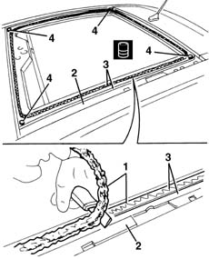
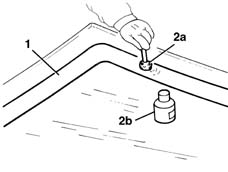
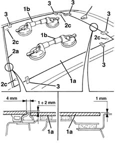
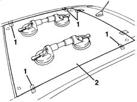
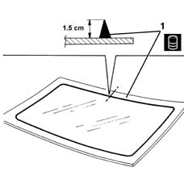
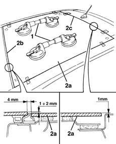
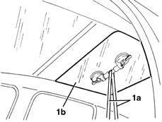

7030B48 FIXED REAR TRANSPARENT section of sliding roof - R.R .
- Path
- Procedures > 70 FITTINGS > 7030 SUN ROOF AND HOOD > 7030B sliding roof > 7030B48 FIXED REAR TRANSPARENT section of sliding roof - R.R .
- Kind
- repair procedure (removal / refitting; the operation number is the code)
- Applies to
- all engines; all production periods
- Interactive page
- https://sloeber94.github.io/elrnDB-lYpsln/en/#/2429558
Applies to: all engines; all production periods
 Removing
Removing
 Refitting
Refitting7065C30 interior l/h or r/h grab handle (one) - r+r (all)
7065C34 l/h or r/h sun blind (one) - r+r (left and right)
7040E10 front courtesy light - r+r
7040H30 front pillar trim - r r (left and right)
7040L40 front compartment scuff strip - r r
7050A20 one-piece rear seat cushion - r r
7040G30 boot light bulb holder - r r
7040H38 central pillar upper element - r r (left side)
7040H42 rear pillar trim - r r (left side)
7040A18 glove compartment on facia - arrange
7040A30 Left instrument panel lower TRIM - R.R.
2125A30 lever/knob cover - r + r
7040A28 TRIM on gearbox control panel - R.R.
Applies to: all engines; all production periods
Refitting
Removing1. Using a suitable tool, cut and smooth off the bead of sealant (take care over the window glass residues) in the fixed window frame, so as to leave a thickness of between 0.25 and 1 mm, without scratching the paintwork. The sealant left in the frame will act as a backing for the new bond.
2. Suction all the fragments of glass from the fixed window housing. Suction all the fragments of glass from other parts of the vehicle as well.
3. Clean the fixed window seating carefully with compressed air and thoroughly degrease with heptane. If glueing takes place 60 minutes after cutting and smoothing the bead of sealant, treat the sealant surface with the specific activator and wait 15 minutes before fixing the fixed window.
 | Type | Component | Name | Qty. |
|---|---|---|---|---|
3 | - | SUN ROOF FIXED TRANSPARENT SECTION HOUSING | PUR activator | - |
Touch up the paintwork if necessary.
4. Fit the special shims.

Applies to: all engines; all production periods
Check that the new window is not damaged.
1. Degrease the screen-printed edge of the new window using heptane.
2. Using the swab (2a) supplied in the kit, apply the glass adhesion promoter (primer) (2b) on the printed perimeter.

Applies to: all engines; all production periods
Make sure that the sliding front roof is completely closed (end of travel).
1. Fit the suction pads (1b) on the glass (1a) and carry out a test fitting, then centre the glass perfectly in the housing.
2. Also check the reciprocal position of the glass (1a) along the front profile (2a) and the rear profile (2b): check that the measurements shown in the diagram are correct; if necessary, adjust the special shims (2c).
3. After the window has been centred, mark the reciprocal position of the glass and the housing using strips of adhesive tape.

Applies to: all engines; all production periods
1. Cut the strips of adhesive tape.
2. Remove the glass.

Applies to: all engines; all production periods
1. Use an air gun to extrude a bead of sealant as evenly as possible along the perimeter of the window.
| Type | Component | Name | Qty. |
|---|---|---|---|---|
1 | Sealant | SUN ROOF FIXED WINDOW | Product n. 71711976 | - |

Applies to: all engines; all production periods
1. With the assistance of a second operator, fit the windscreen in its seating immediately after applying the sealant and bed it in place.
2. Reach the correct position for the glass (2a) along the front profile (2b) and the rear profile (2c) (follow the measurements shown in the diagram).

Applies to: all engines; all production periods
1. Position the belt (1a) as shown in the diagram from inside the vehicle and tension it so that the glass (1b) is kept in the correct position as indicated in the previous points.

Applies to: all engines; all production periods
Before refitting the interior components of the car, check that there are no leaks by carrying out a water test.
7030B26 sliding roof blind - r+r with roof panel removed
7040H16 roof panel lining - r r
7040A28 TRIM on gearbox control panel - R.R.
7040A30 Left instrument panel lower TRIM - R.R.
2125A30 lever/knob cover - r + r
7040A18 glove compartment on facia - arrange
7040H42 rear pillar trim - r r (left side)
7040H38 central pillar upper element - r r
7040G30 boot light bulb holder - r r
7050A20 one-piece rear seat cushion - r r
7040L40 front compartment scuff strip - r r
7040H30 front pillar trim - r r (left and right)
7040E10 front courtesy light - r+r
7065C34 l/h or r/h sun blind (one) - r+r (left and right)
Topics linked from this page (18)
- 2125A30 lever/knob cover - r + r
- 7030B26 sliding roof blind - r+r with roof panel removed
- 7040A18 glove compartment on facia - arrange
- 7040A28 TRIM on gearbox control panel - R.R.
- 7040A30 Left instrument panel lower TRIM - R.R.
- 7040E10 front courtesy light - r+r
- 7040G30 boot light bulb holder - r r
- 7040H16 roof panel lining - r r
- 7040H30 front pillar trim - r r
- 7040H38 central pillar upper element - r r
- 7040H42 rear pillar trim - r r
- 7040H50 rear panel - r r
- 7040L20 tunnel trim - r r
- 7040L40 front compartment scuff strip - r r
- 7050A10 rear seat - r+r
- 7050A20 one-piece rear seat cushion - r r
- 7065C30 interior l/h or r/h grab handle (one) - r+r
- 7065C34 l/h or r/h sun blind (one) - r+r